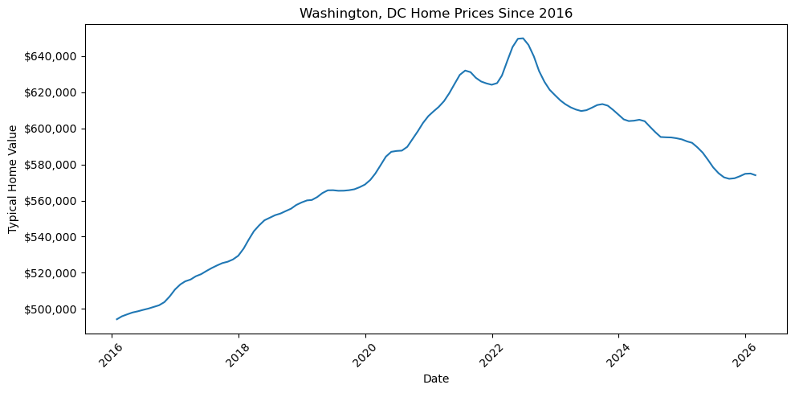
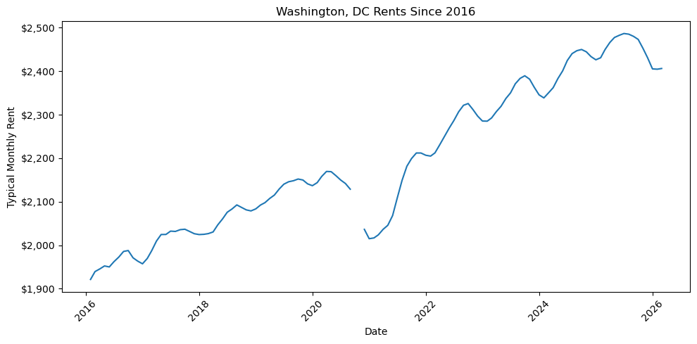

Should You Buy a Home — and Where?
A data-driven narrative about renting, buying, and real estate opportunity
The Question
For years, homeownership was treated as the default path to financial stability. But in high-cost markets, that assumption is harder to defend than it once was.
This project begins with Washington, DC, where home prices, rents, and borrowing costs have all shifted dramatically since 2016.
The central question is not just whether buying is better than renting, but where buying still makes sense as an investment.
Why Start with DC?
Washington, DC is a useful case study because it combines many of the pressures shaping the modern housing market: high prices, strong demand, limited affordability, and a large population of renters.
For many households, DC represents the kind of market where buying may feel desirable, but not always financially realistic.
How Home Prices Changed in Washington, DC
Since 2016, typical home values in Washington, DC have followed a clear upward trajectory, rising from just under $500,000 to a peak above $640,000 in 2022.
This increase accelerated significantly during the 2020–2022 period, when historically low interest rates and heightened housing demand pushed prices upward at a faster pace than in previous years. However, after reaching their peak, home values began to stabilize and slightly decline through 2023–2025.
This shift reflects a broader change in market conditions. As mortgage rates increased, borrowing became more expensive, reducing demand and slowing price growth. Even so, prices have remained elevated relative to pre-2020 levels, suggesting that affordability has not meaningfully improved despite the recent cooling.

How Rents Changed in Washington, DC
Rents in Washington, DC also increased over time, but followed a different pattern than home prices.
From 2016 through early 2020, rents rose steadily, reflecting consistent demand in the rental market. However, a noticeable dip occurs around 2020–2021, likely due to pandemic-related disruptions, including reduced urban demand and temporary migration away from city centers.
After this decline, rents rebounded quickly and continued to rise through 2023 and 2024, reaching new highs near $2,500 per month. Unlike home prices, rents did not experience the same level of decline in recent years, indicating that rental demand has remained relatively strong.

Why This Matters
The relationship between home prices and rents is critical for understanding housing affordability and investment potential.
While both have increased since 2016, home prices rose more sharply especially during the 2020–2022 period creating a growing gap between the cost of owning and the income a property can generate through rent.
This divergence has important implications:
For residents, it makes homeownership less accessible relative to renting
For investors, it reduces potential returns, since purchase prices are rising faster than rental income
In other words, even though the housing market has cooled slightly, the underlying economics of buying especially in a high-cost market like Washington, DC remain challenging.
How Investment Potential Differs Across Cities
While Washington, DC is the anchor of this project, it is not representative of every housing market. To compare investment potential across cities, I use rent yield, which measures annual rental income relative to home value.
What the Data Shows
The chart reveals a clear and consistent difference in investment potential across housing markets. Rent yield, which measures annual rental income relative to home value, varies significantly by city.
Washington, DC consistently appears on the lower end of the distribution, with rent yield typically around 4–5%. This suggests that home prices in DC are high relative to the income those properties can generate through rent.
In contrast, smaller and lower-cost markets such as Augusta, GA and Columbus, GA show substantially higher rent yields, often in the range of 8–11%. These cities offer stronger cash flow potential because home prices are lower relative to rents.
Mid-tier markets like Chicago and Tacoma fall somewhere in between, with moderate rent yields that reflect a more balanced relationship between home values and rental income.
How Rent Yield Has Changed Over Time
Across nearly all cities, rent yield trends downward over time, particularly during the 2020–2022 period. This pattern reflects a broader shift in the housing market: home prices increased more rapidly than rents.
This divergence is especially visible in higher-cost markets. In Washington, DC, rent yield declined during the period when home values surged, indicating that the financial return on purchasing property weakened even as prices rose.
Even in cities with higher initial rent yield, the same pattern appears suggesting that rising home values have compressed returns across many markets.
Why Washington, DC Stands Out
Washington, DC represents a high-demand, high-cost housing market. While it offers stability and long-term appreciation potential, it does not provide strong rental returns relative to its price level.
At most points in time, DC’s rent yield remains below that of every comparison city in this analysis. This indicates that buyers in DC are paying a premium for location, rather than maximizing income-generating potential.
From an investment perspective, this makes DC less attractive for cash flow focused strategies, even though it may still appeal for other reasons such as job access, amenities, or long-term value preservation.
What This Means for Buyers and Investors
These differences highlight a critical distinction in the housing decision.
In markets like Washington, DC, buying a home may still make sense for personal or lifestyle reasons, but the financial return—particularly in terms of rental income—is relatively limited.
In contrast, cities with higher rent yield offer stronger income potential and may be more attractive for investment-oriented buyers.
This suggests that the question is not simply whether to buy a home, but where buying aligns with financial goals. For individuals prioritizing cash flow or return on investment, lower-cost markets may provide more favorable conditions than high-cost urban centers.
In other words, the same dollar invested in different cities can produce dramatically different outcomes.